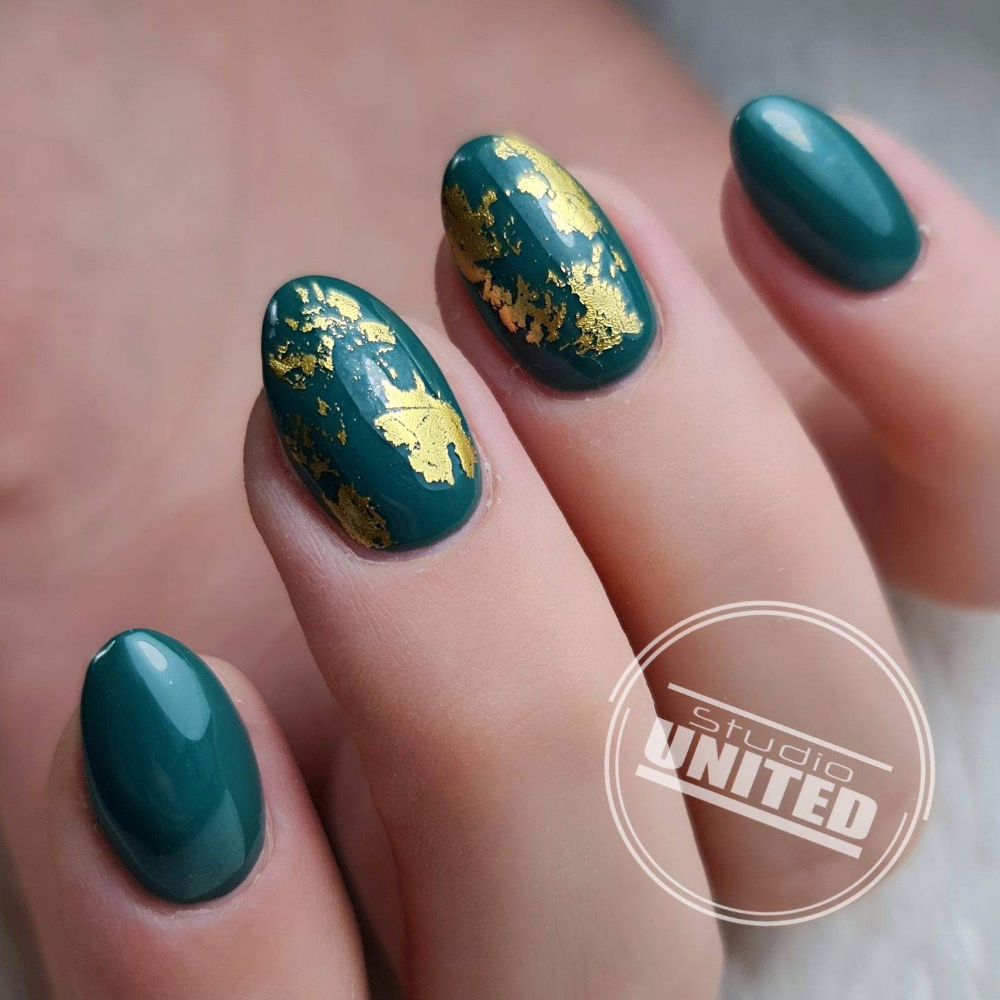
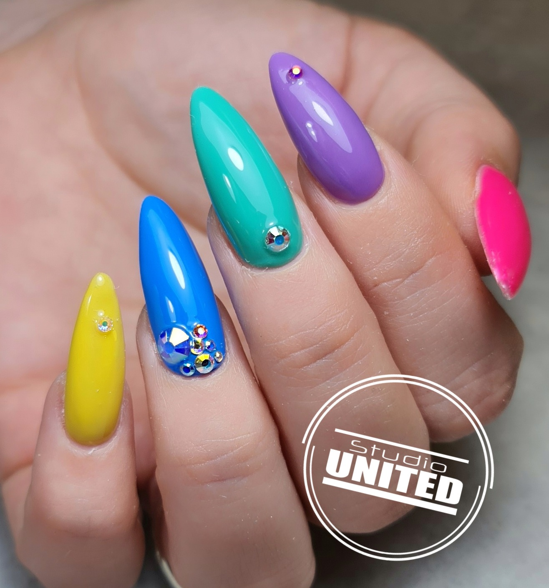
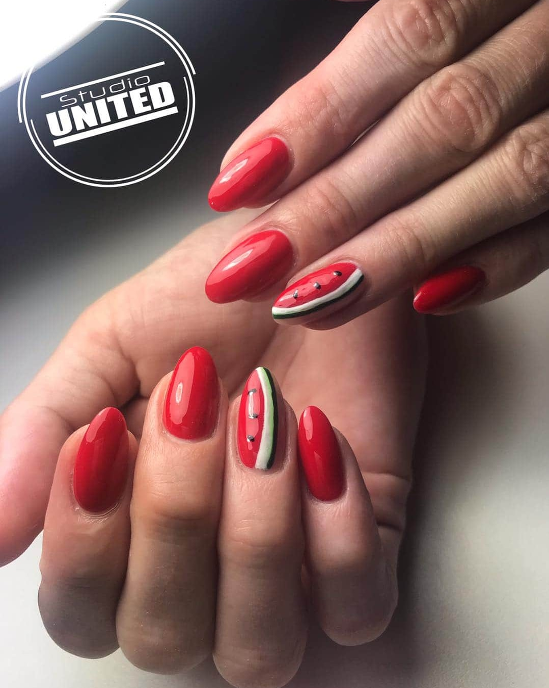
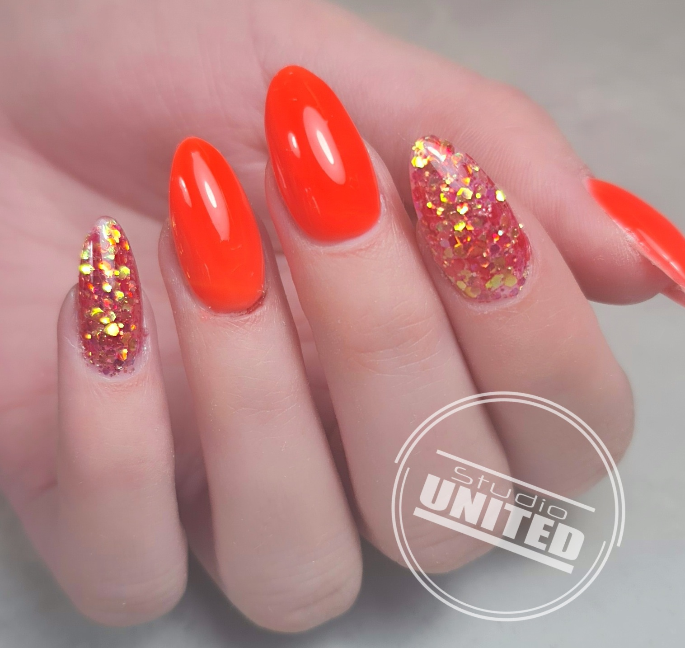
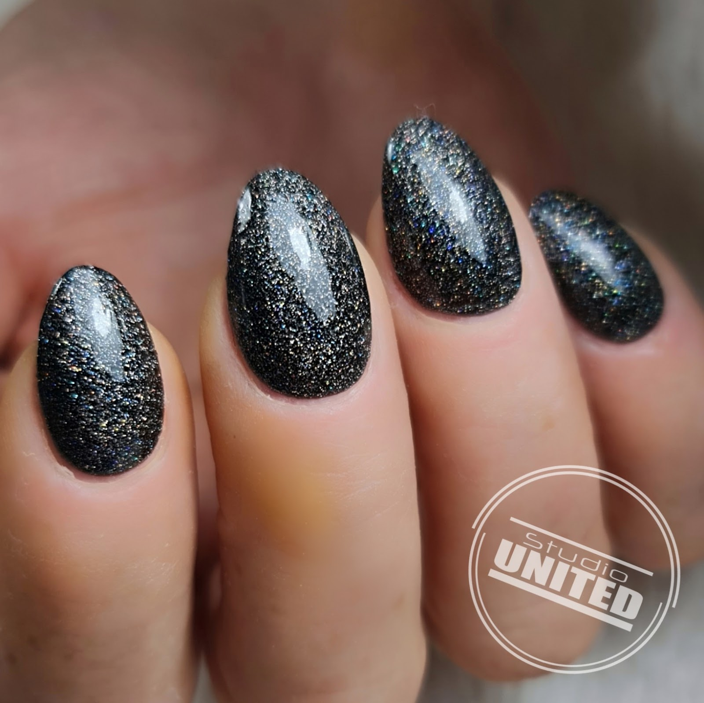
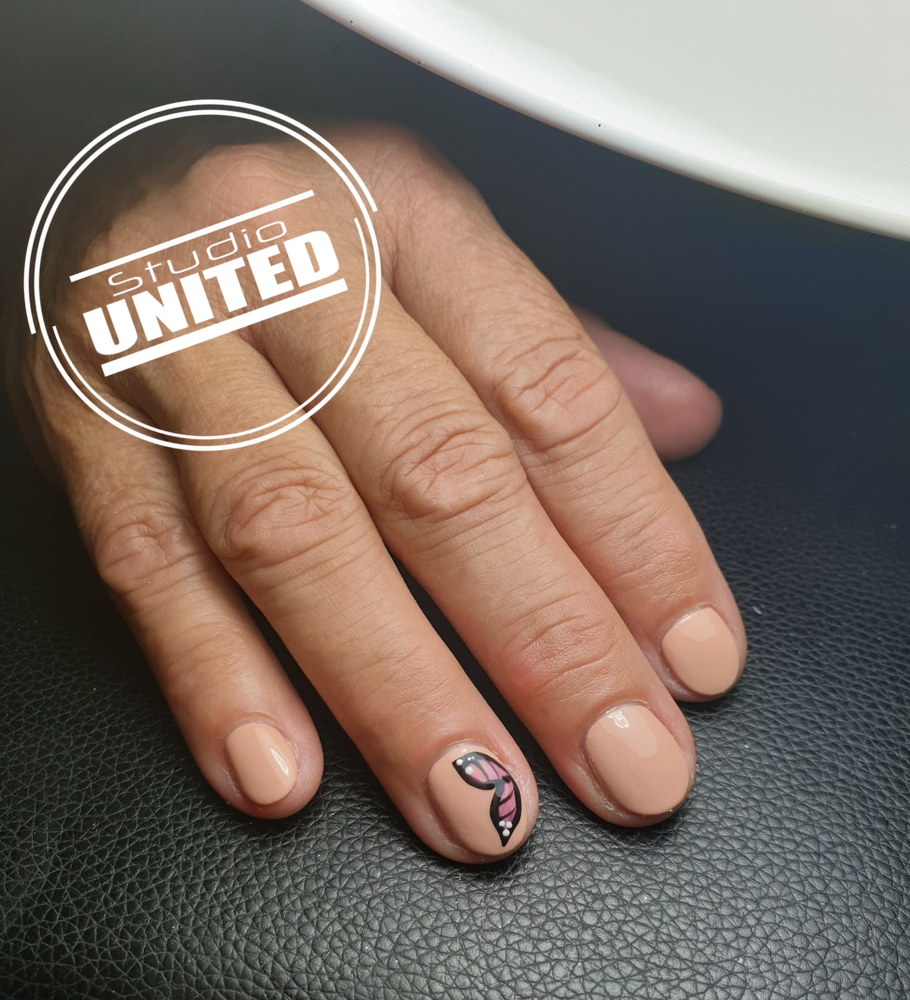
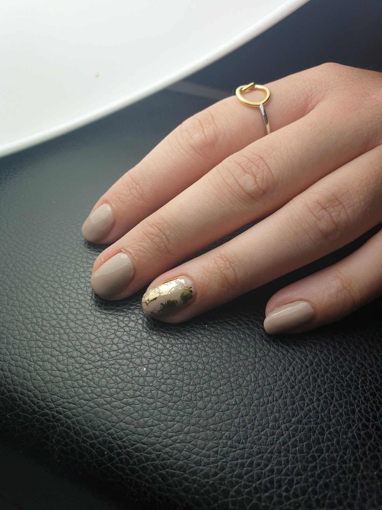
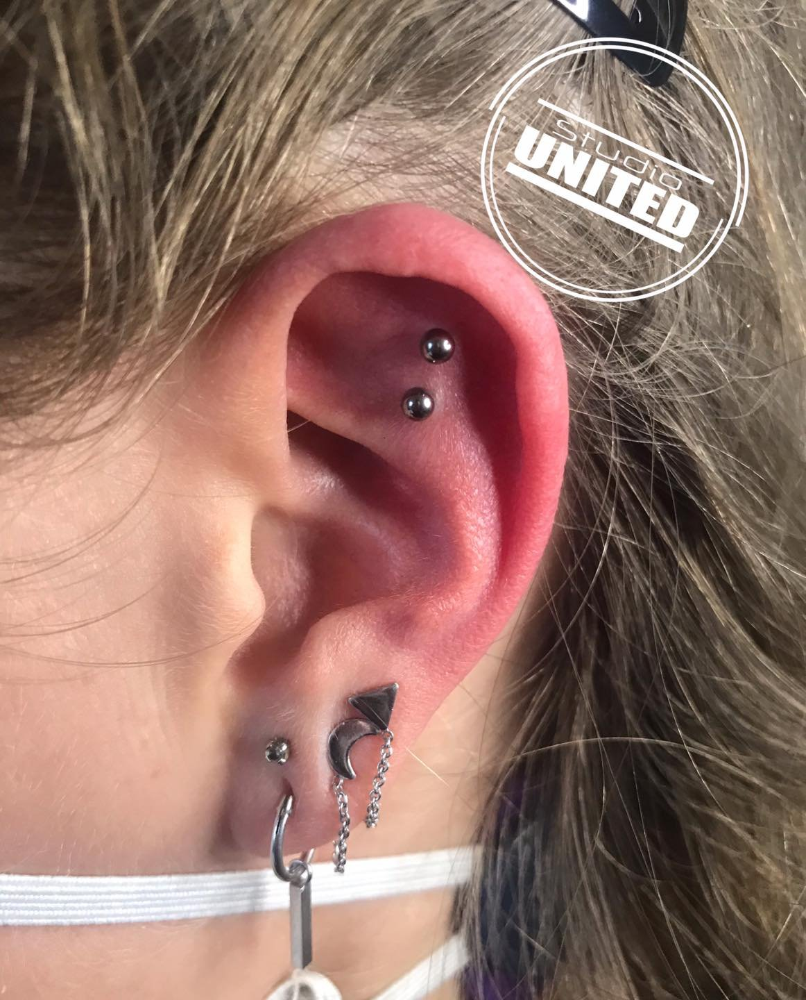
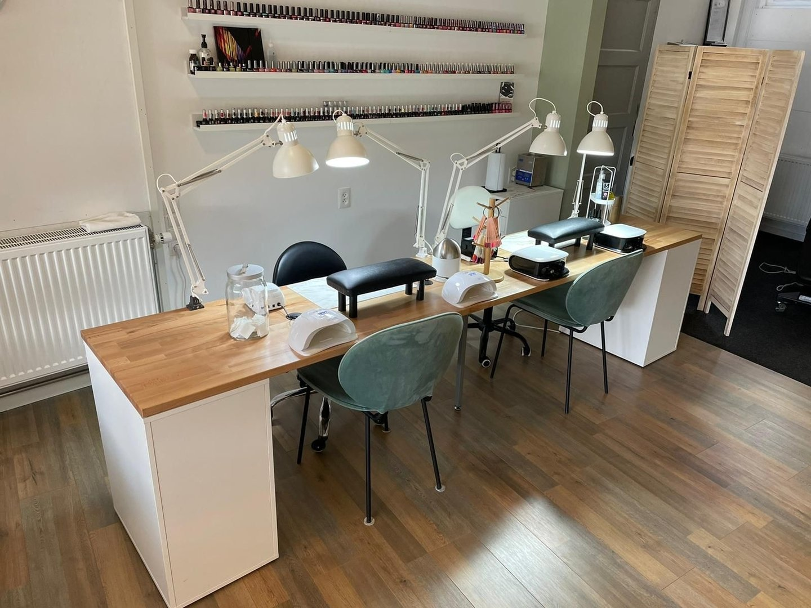

Nagelstyliste & piercer in hartje Aalten
Kom binnen, de koffie staat klaar.
Bij Jody voor kunstnagels, BIAB, een cosmetische pedicure of een piercing door een GGD erkende piercer. Op afspraak, dinsdag tot en met zaterdag.
4,4 uit 20 Google-reviews

Nagels die weken mooi blijven.
BIAB is sinds 2024 de meest gekozen behandeling in de salon. BIAB staat voor 'builder in a bottle': een bouwgel die je eigen nagel verstevigt. Je kiest uit veel natuurlijke tinten, of laat er een gelpolish naar keuze overheen zetten.
Liever lang? Bij een nieuwe set worden je eigen nagels uitvoerig voorbereid en verlengd met sjablonen en acrygel. Daarna kies je uit vele kleuren gelpolish en nailart.
Behandelingen en prijzen
- BIAB naturel
- € 47,50
- BIAB kleur
- € 52,50
- Nieuwe set kunstnagels
- € 60,00
- Cosmetische pedicure
- € 50,00
60 minuten, natuurlijke tint
75 minuten, met gelpolish naar keuze
120 minuten, met verlenging
90 minuten. Nagelriemen, huid en voeten verzorgd en strak gelakt met gelpolish: 8 tot 10 weken plezier.
Nagelafspraken kun je ook online inplannen via de agenda van Jody.
Van naturel tot glitter.
Allemaal gezet in de salon. Swipe voor meer.







Kraakbeen in het oor is helemaal hot op dit moment.
Een piercing, met zorg gezet.
Jody is sinds januari 2019 GGD erkend piercer. Van een kraakbeenpiercing in je oor tot een navelpiercing: er is veel mogelijk. Intieme piercings zet ze niet. Omdat elke piercing maatwerk is, plan je die niet online maar via een belletje of appje.
- Leeftijd
- Vanaf 12 jaar. Navelpiercings vanaf 15 jaar. Ben je onder de 18? Dan komt een ouder of verzorger mee of geeft telefonisch toestemming.
- Prijs en betalen
- Vanaf € 40,00. Je betaalt contant of met een QR-code ter plekke.
- Nazorg
- Je krijgt duidelijke instructies mee voor een soepele genezing. Vragen of zorgen? Op werkdagen is Jody bereikbaar tot 17.00 uur.
- Goed om te weten
- Kinderen en huisdieren kunnen niet mee naar binnen. Garantie geldt tot de voordeur.
Hi, ik ben Jody.
Trotse eigenaresse van Studio United, gecertificeerd nagelstyliste en GGD erkend piercer. Na een paar jaar aan huis opende ik in november 2020 de salon aan de Landstraat in Aalten.
Sinds oktober 2022 zit ik een paar deurtjes verderop, aan de Haartsestraat 10C. In hetzelfde pand vind je ook Sas & Beauty en Kapsalon Bij Peet. Ben ik in de salon? Wandel gerust even binnen.
Wie weet tot ziens!

Goed om te weten.
-
Makkelijk binnen
Het pand is goed toegankelijk als je minder goed ter been bent. Je mag zelfs met een scootmobiel naar binnen. Vraag gerust naar de mogelijkheden.
-
Betalen
Contant, of met een QR-code die Jody ter plekke voor je aanmaakt. Voor de QR-code komt er € 0,30 bij.
-
Annuleren
Tot 24 uur van tevoren kosteloos. Daarna, of als je zonder bericht 15 minuten of later binnenkomt, wordt 50% van de behandeling gerekend. Bij een no-show de hele behandeling.
-
Bereikbaar
Op werkdagen telefonisch tot 17.00 uur. Berichten buiten die tijden beantwoordt Jody de eerstvolgende werkdag.
"Altijd een avondje uit."
4,4 sterren uit 20 reviews op Google
"Altijd een avondje uit als ik mijn nagels laat doen door Jody. Inmiddels al een aardige lange tijd vaste klant en zeer tevreden! Iedereen aan te raden. 5 sterren! ☆☆☆☆☆"
"Wat een service mijn medicinale piercing was er uit. ikbelde op en kon meteen komen en werd meteen terug geplaatst nogmaals hartelijk bedankt"
"In 1 woord geweldig! Wat een metamorfose van mn nagels! Superblij mee"
"Tijdje terug een piercing bij Jody laten zetten. Hele goede service en kreeg ook veel informatie! Het is erg gezellig daar, na het verwisselen van mijn piercing heb ik ook een nagelafspraak gemaakt. Ook hierin is ze echt heel goed! Kortom een hele gezellige en kundige salon😀."
"Heerlijk nu Jody er weer is. Genoten. En mijn nagels zien het weer fantuiit"
Zin in mooie nagels of een nieuw gaatje?
Bel of app Jody voor een afspraak. Nagels kun je ook online plannen, piercings gaan altijd via een belletje of appje.
- Adres
- Haartsestraat 10C
7121 CX Aalten
Route plannen
Openingstijden
Op afspraak
| Maandag | Gesloten |
|---|---|
| Dinsdag | 09:00 tot 14:00 |
| Woensdag | 09:00 tot 17:00 |
| Donderdag | 09:00 tot 14:00 |
| Vrijdag | 09:00 tot 17:00 |
| Zaterdag | 09:00 tot 17:00 |
| Zondag | Gesloten |